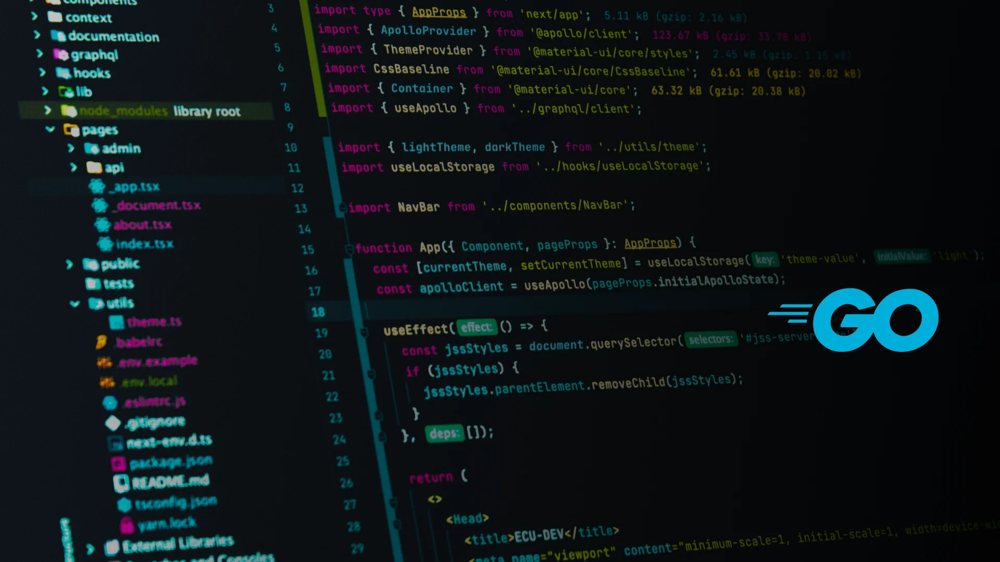
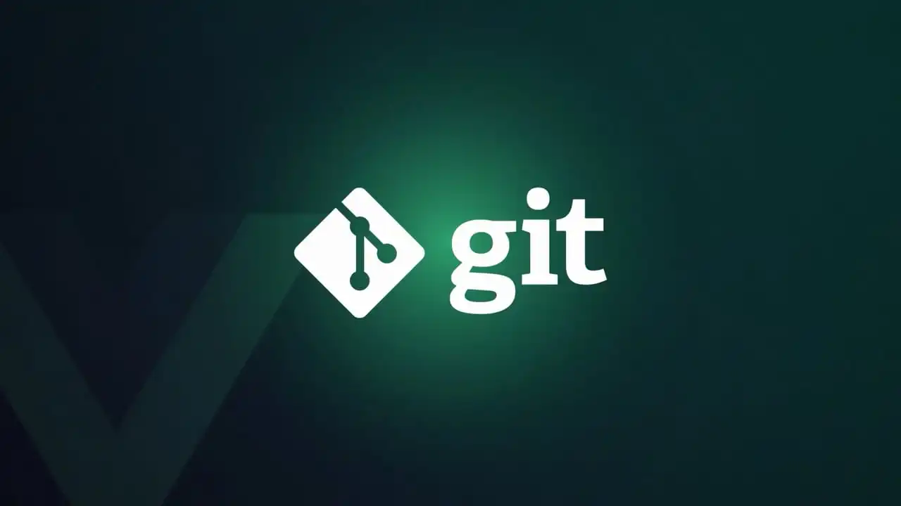

April 25, 2024
Projects
"I bring ideas to life through a diverse range of projects that
reflect my expertise in software development, AI innovation, and
user experience design. From creating robust backend systems to
developing intuitive interfaces and AI-driven solutions, my work
aims to solve real-world challenges and streamline processes.
Here's a showcase of my key projects."
July 12 - September 13, 2024

Source:
MindInventory
This project is designed to help developers excel in Golang
interviews with practical questions, real-world scenarios, and
in-depth explanations. It addresses Go's rising demand, ranked as
the 10th most in-demand language for 2024 according to Crossover, due to its efficiency, simplicity, and strength in cloud
computing, microservices, and scalable systems. Go's prominence is
further highlighted by
IEEE Spectrum
rankings, placing it 8th overall and 7th among trending languages.
By offering this resource, developers gain confidence, skills, and
mastery in this critical, fast-growing language, tailored for career
success in tech.

Source:
PNGWing
This Git project was aimed to address the evolving needs of the
software development community, driven by data showing a significant
increase of 4.8 million developers over the past five years according to
Statista. Despite Git's vital role in version control and collaboration,
many developers face challenges using its commands, particularly in
complex, non-linear development scenarios as per the
ACM. An analysis of 80,370 Stack Overflow questions revealed these
struggles, highlighting a need for practical, structured learning
resources. This repository aims to bridge that gap by offering
accessible guides, real-world scenarios, and tools to enhance
developers' Git proficiency, collaboration, and overall
productivity.
Source:
LinkedIn
Tetris Puzzle Solver – Personal Project Developed a
solution to a Tetris-style puzzle using an input file with block
data, utilizing and mastering backtracking algorithms. Designed to illustrate algorithmic principles for other developers, this project
applied backtracking to efficiently fit and solve puzzles. It served
as a practical application of learned algorithmic concepts,
showcasing a hands-on approach to advanced problem-solving
techniques.
In this project, I developed a customized command functionality for Projectile in Go, enhancing its usability for developers. The primary motivation was to streamline the build process by allowing users to define project-specific compile commands directly within their project configuration. This improvement reduces manual input and minimizes errors during compilation.
By implementing this feature, I aimed to improve developer efficiency and project organization, making it easier to manage complex builds. This project showcases my ability to enhance existing tools and tailor solutions to meet user needs, demonstrating both technical skill and a commitment to improving workflows.